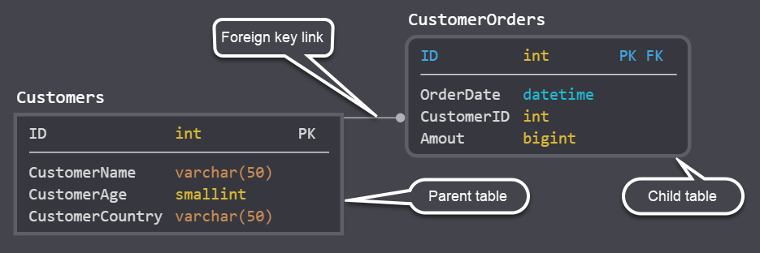
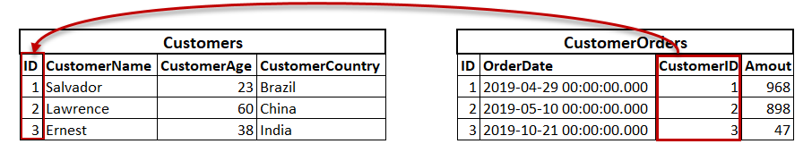
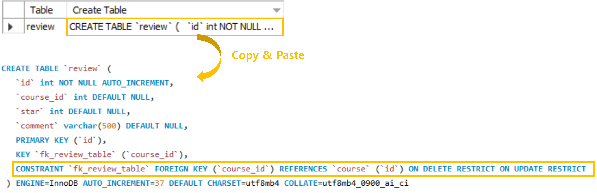

Foreign Key & Python 연결
Table of contents
Foreign Key
: 두 개의 테이블을 연결해주는 다리 역할을 하는 key.
- Foreign Key가 있는 테이블: child table(자식 테이블) 혹은 referencing table이라고 지칭
- Foreign Key에 의해 참조당하는 테이블: parent table(부모 테이블) 혹은 referenced table이라고 지칭


(출처: SQLShack)
참조 무결성(Referential Integrity)
: 두 테이블 간에 참조 관계가 있을 때 각 데이터 간에 유지되어야 하는 정확성과 일관성을 의미
- DBMS 상에서 두 테이블 간의 Foreign Key 관계를 설정해두면 참조 무결성을 지킬 수 있다
- ex) item_id = 10인 리뷰들이 있는데 정작 item 테이블에는 id = 10인 상품이 없다면 참조 무결성이 깨진 것!
*논리적 Foreign Key와 물리적 Foreign Key
- 실무에서는 논리적으로 두 테이블 간에 Foreign Key 관계가 있어도 DBMS 상에서 설정해두지 않는 경우도 있다 (ex. 성능 / Legacy data 때문…)
- 논리적(Logical) Foreign Key: 논리적으로 성립하는 Foreign Key
- 물리적(Physical) Foreign Key: DBMS 상에서 실제로 Foreign Key로 설정해서 참조 무결성을 보장할 수 있게 된 것
Foreign Key 설정하기
- SQL문으로 설정:
- 형식: (Foreign Key도 일종의 Constraint이므로, ADD CONSTRAINT문을 사용)
ALTER TABLE 테이블명 ADD CONSTRAINT 제약이름 FOREIGN KEY (foreign_key로_설정할_컬럼) REFERENCES 참조하는_테이블명 (참조할_컬럼) ON DELETE 정책 ON UPDATE 정책; - 예시: review 테이블의 course_id 컬럼이 foreign key, 참조되는 컬럼은 course 테이블의 id 컬럼.
ALTER TABLE `course_rating`.`review` ADD CONSTRAINT `fk_review_table` FOREIGN KEY (`course_id`) REFERENCES `course_rating`.`course` (`id`) ON DELETE RESTRICT ON UPDATE RESTRICT; - 위와 같이 Foreign Key를 설정해두면 참조 무결성이 보장되도록 제약이 걸린다.
ex) course 테이블에 id = 10인 row가 없는 상황에서, review 테이블에 course_id = 10인 row를 삽입하려고 하면 error 발생.
- 형식: (Foreign Key도 일종의 Constraint이므로, ADD CONSTRAINT문을 사용)
- workbench를 통해 직접 클릭해서 설정하는 것도 가능:

+) 테이블에 더해진 Constraint 확인하기
-
SHOW CREATE TABLE 테이블명;: 특정 테이블이 어떻게 생성되었는지를 알려주는 SQL문
(특정 테이블을 다시 생성한다고 하면 어떤 CREATE TABLE문을 작성해야 하는지 알려준다) - 이를 활용하면 테이블에 더해져 있는 Constraint (Foreign Key 포함) 종류를 파악할 수 있다
SHOW CREATE TABLE review;
→ 아래와 같이 결과가 나오고, 그 내용을 복사해서 다른 곳에 붙여넣으면 전체 SQL문을 확인할 수 있다:

Foreign Key 삭제하기
-
ALTER TABLE 테이블명 DROP FOREIGN KEY 제약이름;의 구조로 작성 - cf) MySQL말고 다른 DB에서는
DROP CONSTRAINT를 사용하기도 함
-- review 테이블에 있는 'fk_review_table'이라는 Foreign Key 조건을 삭제
ALTER TABLE review
DROP FOREIGN KEY fk_review_table;
Foreign Key 정책
ON DELETE
: 부모 테이블의 row가 삭제되는 경우에 대한 정책
- RESTRICT 정책
- 자식 테이블의 row에 의해 참조되고 있는 부모 테이블의 row는 삭제 불가능
- ex) course 테이블이 review 테이블에 의해 참조되고 있고, review 테이블에 course_id = 5인 row들이 존재할 때, course 테이블에서 id = 5인 row를 삭제하려고 하면 error 발생
DELETE FROM course WHERE id = 5; - ※ 해당 row를 참조하고 있는 자식 테이블의 row들을 모두 삭제한 후에야 삭제가 가능하다!
- +) MySQL에서 ‘No Action’이라고 설정하는 것도 RESTRICT와 동일한 정책
- CASCADE 정책
- 부모 테이블의 row를 삭제하면, 그 row를 참조하고 있던 자식 테이블의 row도 모두 함께 삭제됨
- ex) course 테이블이 review 테이블에 의해 참조되고 있고, review 테이블에 course_id = 5인 row들이 존재할 때, course 테이블에서 id = 5인 row를 삭제하면
1) 정상적으로 삭제되고, 2) review 테이블에서 course_id = 5인 row들도 함께 삭제된다
- SET NULL 정책
- 부모 테이블의 row를 삭제하면, 그 row를 참조하고 있던 자식 테이블의 row의 foreign_key 자리가 모두 NULL값으로 대체됨
- ex) course 테이블이 review 테이블에 의해 참조되고 있고, review 테이블에 course_id = 5인 row들이 존재할 때, course 테이블에서 id = 5인 row를 삭제하면
1) 정상적으로 삭제되고, 2) review 테이블에서 course_id = 5인 row들은 course_id가 NULL값으로 바뀐다
ON UPDATE
: 부모 테이블의 row에서 참조되는 컬럼이 업데이트되는 경우에 대한 정책
- RESTRICT 정책
- 부모 테이블의 row에서, 자식테이블의 row에 의해 참조되고 있는 컬럼은 업데이트 불가능
- ex) course 테이블이 review 테이블에 의해 참조되고 있고, review 테이블에 course_id = 1인 row들이 존재할 때, course 테이블에서 id = 1인 row의 id를 100으로 업데이트하려고 하면 error 발생
UPDATE course SET id = 100 WHERE id = 1;
- CASCADE 정책
- 부모 테이블의 row에서, 자식테이블의 row에 의해 참조되고 있는 컬럼을 업데이트하면 이를 참조하던 자식 테이블 row의 foreign_key도 함께 업데이트됨
- ex) course 테이블이 review 테이블에 의해 참조되고 있고, review 테이블에 course_id = 1인 row들이 존재할 때, course 테이블에서 id = 1인 row의 id를 100으로 업데이트하려고 하면
1) 정상적으로 업데이트되고, 2) review 테이블에서 course_id = 1인 row들도 다 course_id = 100으로 변경된다
- SET NULL 정책
- 부모 테이블의 row에서, 자식테이블의 row에 의해 참조되고 있는 컬럼을 업데이트하면 이를 참조하던 자식 테이블 row의 foreign_key는 모두 NULL값으로 대체됨
- ex) course 테이블이 review 테이블에 의해 참조되고 있고, review 테이블에 course_id = 1인 row들이 존재할 때, course 테이블에서 id = 1인 row의 id를 100으로 업데이트하려고 하면
1) 정상적으로 업데이트되고, 2) review 테이블에서 course_id = 1인 row들도 다 course_id가 NULL값으로 바뀐다
+) ON DELETE와 ON UPDATE를 서로 다른 정책으로 설정하는 것도 가능!
- ex) ON DELETE RESTRICT & ON UPDATE CASCADE
Python에서 DB 연결
PyMySQL
: python에서 MySQL 데이터베이스에 연결할 수 있게 해주는 library.
-
pip install pymsql로 설치해서 사용
- 데이터베이스와 연결하기
import pymysql # import해서 사용 conn = pymysql.connect(host='localhost', user='root', password='password', db='database') curs = conn.cursor(pymysql.cursors.DictCursor) - 테이블 생성하기
# curs.execute() 안에 원하는 SQL문을 써주면 된다 curs.execute('''CREATE TABLE IF NOT EXISTS `users` ( id INT NOT NULL AUTO_INCREMENT, name VARCHAR(50) NOT NULL, follower_count INT NULL PRIMARY KEY (id));''') conn.commit() # commit을 해야 DB에 반영됨 - 데이터 INSERT
# 아래와 같이 f string을 써서 SQL문을 구성하는 것도 가능 curs.execute(f"""INSERT INTO users (name, follower_count) VALUES ('{artist_name}', {artist_follower_count});""") conn.commit()- 그 외, 데이터 삭제/업데이트 등도 그냥
cusr.execute("SQL문")으로 적어준 후conn.commit()하면 DB에 반영된다
- 그 외, 데이터 삭제/업데이트 등도 그냥
- 데이터 SELECT
-
curs.fetchall()을 사용하면 SELECT문으로 가져온 데이터 전체를 한 번에 읽어올 수 있다curs.execute('SELECT * FROM users WHERE follower_count > 10') curs.fetchall() -
curs.fetchone()을 사용하면 SELECT문으로 가져온 데이터를 한 줄 한 줄 읽어오게 된다
(*주로 한 줄만 읽어오면 될 때 사용)curs.execute('SELECT * FROM users ORDER BY follower_count DESC LIMIT 1') curs.fetchone()
-
- 데이터베이스 연결 닫기
# 원하는 작업을 모두 수행한 후에 close로 닫아주면 된다 conn.close